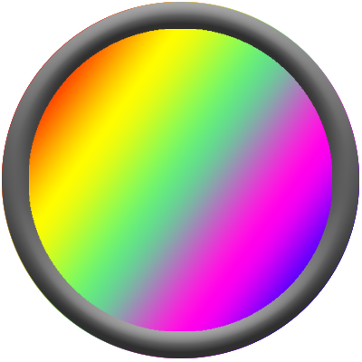

<footer>
    <!-- フッダー部 -->
    <div class="footer-block">
        <div class="footer-inner">
            <!-- ロゴ -->
            <div class="footer-inner-left">
                
            </div>
            <!-- 名前 -->
            <div class="footer-inner-center">
                <p>
                    <svg xmlns="http://www.w3.org/2000/svg" width="16" height="16" fill="currentColor" class="bi bi-diamond" viewBox="0 0 16 16">
                    <path d="M6.95.435c.58-.58 1.52-.58 2.1 0l6.515 6.516c.58.58.58 1.519 0 2.098L9.05 15.565c-.58.58-1.519.58-2.098 0L.435 9.05a1.482 1.482 0 0 1 0-2.098L6.95.435zm1.4.7a.495.495 0 0 0-.7 0L1.134 7.65a.495.495 0 0 0 0 .7l6.516 6.516a.495.495 0 0 0 .7 0l6.516-6.516a.495.495 0 0 0 0-.7L8.35 1.134z"/></svg>
                    Koji Kawazu
                </p>
                <p>
                    新卒から福岡を中心にインフラやクレジット向けのSEとして参画。主にリプレイスや改修、機能変更案件を経験。
                    今後もクラウドを中心とした案件に参画する。メインOSはLinux。メイン言語はJava。学生の頃Android開発やゲーム開発を
                    経験。趣味はジムやYoutube視聴。
                </p>
            </div>
            <!-- リンク -->
            <div class="footer-inner-right">
                <div class="footer-inner-icon">
                    <div><a href="mailto:k.kawa.lin.315@gmail.com"><!-- メール -->
                        <svg xmlns="http://www.w3.org/2000/svg" width="32" height="32" fill="currentColor" class="bi bi-envelope" viewBox="0 0 16 16">
                            <path d="M0 4a2 2 0 0 1 2-2h12a2 2 0 0 1 2 2v8a2 2 0 0 1-2 2H2a2 2 0 0 1-2-2V4zm2-1a1 1 0 0 0-1 1v.217l7 4.2 7-4.2V4a1 1 0 0 0-1-1H2zm13 2.383-4.758 2.855L15 11.114v-5.73zm-.034 6.878L9.271 8.82 8 9.583 6.728 8.82l-5.694 3.44A1 1 0 0 0 2 13h12a1 1 0 0 0 .966-.739zM1 11.114l4.758-2.876L1 5.383v5.73z"/>
                            </svg>
                    </a></div>
                    <div><a href="https://twitter.com/ayariru_7"><!-- twitter -->
                        <svg xmlns="http://www.w3.org/2000/svg" width="32" height="32" fill="currentColor" class="bi bi-twitter" viewBox="0 0 16 16">
                            <path d="M5.026 15c6.038 0 9.341-5.003 9.341-9.334 0-.14 0-.282-.006-.422A6.685 6.685 0 0 0 16 3.542a6.658 6.658 0 0 1-1.889.518 3.301 3.301 0 0 0 1.447-1.817 6.533 6.533 0 0 1-2.087.793A3.286 3.286 0 0 0 7.875 6.03a9.325 9.325 0 0 1-6.767-3.429 3.289 3.289 0 0 0 1.018 4.382A3.323 3.323 0 0 1 .64 6.575v.045a3.288 3.288 0 0 0 2.632 3.218 3.203 3.203 0 0 1-.865.115 3.23 3.23 0 0 1-.614-.057 3.283 3.283 0 0 0 3.067 2.277A6.588 6.588 0 0 1 .78 13.58a6.32 6.32 0 0 1-.78-.045A9.344 9.344 0 0 0 5.026 15z"/>
                            </svg>
                    </a></div>
                    <div><a href="https://github.com/kojikawazu"><!-- github -->
                        <svg xmlns="http://www.w3.org/2000/svg" width="32" height="32" fill="currentColor" class="bi bi-github" viewBox="0 0 16 16">
                            <path d="M8 0C3.58 0 0 3.58 0 8c0 3.54 2.29 6.53 5.47 7.59.4.07.55-.17.55-.38 0-.19-.01-.82-.01-1.49-2.01.37-2.53-.49-2.69-.94-.09-.23-.48-.94-.82-1.13-.28-.15-.68-.52-.01-.53.63-.01 1.08.58 1.23.82.72 1.21 1.87.87 2.33.66.07-.52.28-.87.51-1.07-1.78-.2-3.64-.89-3.64-3.95 0-.87.31-1.59.82-2.15-.08-.2-.36-1.02.08-2.12 0 0 .67-.21 2.2.82.64-.18 1.32-.27 2-.27.68 0 1.36.09 2 .27 1.53-1.04 2.2-.82 2.2-.82.44 1.1.16 1.92.08 2.12.51.56.82 1.27.82 2.15 0 3.07-1.87 3.75-3.65 3.95.29.25.54.73.54 1.48 0 1.07-.01 1.93-.01 2.2 0 .21.15.46.55.38A8.012 8.012 0 0 0 16 8c0-4.42-3.58-8-8-8z"/>
                            </svg>
                    </a></div>
                </div><!-- footer-inner-right end -->
            </div><!-- footer-inner-right end -->
        </div><!-- footer-inner end -->
    </div><!-- footer-block end -->
</footer>